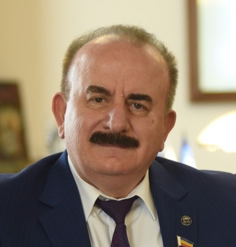

Бесарион Чохоевич вносит большой вклад в научно-педагогическую деятельность вуза. На сегодняшний день опубликовано свыше 260 его печатных работ, в том числе 30 монографий, 180 статей, 5 авторских свидетельств, дипломов, патентов и лицензий и 45 учебно-методических пособий с грифом УМО.
Ректор активно участвует и в подготовке научно-педагогических кадров.

Бесарион Чохоевич Месхи
Ректор ДГТУ